유통관리사-2급 (2015-07-05 기출문제)
1과목: 유통물류일반
1. 제품이나 업무의 불량수준을 측정하고 이를 체계적인 방법론을 통해 무결점 수준으로 줄이자는 전사적 품질혁신 추진방법론은?
- 품질통제(QC)
- 지속적 개선
- 식스시그마(6 Sigma)
- ISO9000
- JIT(just-in-time)
(정답률: 56%)

2. 다음 박스의 ( )안에 들어갈 알맞은 단어는?
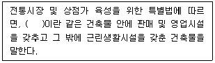
- 복합형 생활건물
- 주상복합건물
- 시장정비건물
- 근린건물
- 상가건물
(정답률: 35%)
3. 유통산업발전법에서 정의하는 아래의 용어가 올바르게 짝지어진 것은?
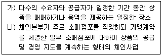
- 가) 임시시장, 나) 직영점형 체인사업
- 가) 임시시장, 나) 프랜차이즈형 체인사업
- 가) 상설시장, 나) 직영점형 체인사업
- 가) 상설시장, 나) 프랜차이즈형 체인사업
- 가) 전문상점가, 나) 조합형 체인사업
(정답률: 38%)
4. 다음 박스의 ( ) 안에 들어갈 용어로 올바르게 짝지어진 것은?
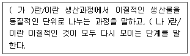
- 가) 배분(allocation), 나) 집적(accumulation)
- 가) 분류(sorting out), 나) 구색(assortment)
- 가) 배분(allocation), 나) 구색(assortment)
- 가) 집적(accumulation), 나) 배분(allocation)
- 가) 구색(assortment), 나) 집적(accumulation)
(정답률: 52%)
5. 유통물류에서의 RFID(radio frequency identification)의 직접적인 효용으로 가장 옳지 않은 것은?
- 제품이력관리 수월
- 생산효율 및 품질의 향상
- 분실 및 멸실의 방지
- 모조품의 방지
- 품절의 감소
(정답률: 60%)
6. 기업이 이해당사자들에게 갖는 책임에 대한 설명으로 옳지 않은 것은?
- 투자자들을 위한 이윤을 창출하는 것
- 종업원들에게 일자리를 제공하고 안정성을 도모하는 것
- 사회적 정의를 촉진시키며 기업의 근무환경을 더나은 곳으로 만들려는 노력
- 주변 경쟁사와 상의하여 가격담합 행위를 하는 것
- 가치가 있는 제품과 서비스를 통해 고객을 만족시키는 것
(정답률: 83%)
7. 포장 표준화의 직접적인 효과로 가장 옳지 않은 것은?
- 포장재 비용이 감소한다.
- 포장공정이 단순화된다.
- 매출상승으로 기업의 수익이 증가한다.
- 인건비 및 제품의 물류비가 절감된다.
- 제품의 파손이 감소된다.
(정답률: 62%)
8. 소매상의 구매관리에서 적정한 거래처를 확보하기 위한 평가 기준으로 가장 옳지 않은 것은?
- 구매자의 목표 달성에 부합되는 적정 품질
- 최적의 가격
- 적정서비스 수준
- 납기의 신뢰성
- 역청구(chargebacks) 가능성 여부
(정답률: 75%)
9. 지게차(포크리프트)로 하역도 할 수 있고 수송도 할 수 있는 단위운송방식을 지칭하는 것으로 가장 옳은 것은?
- 파렛트 시스템
- 복합선적 시스템
- 복합운송 시스템
- 컨테이너 시스템
- 콜드체인 시스템
(정답률: 86%)
10. 한정된 품목에 대한 깊이 있는 구색을 저가격 ㆍ 대량으로 판매하는 업태로 옳은 것은?
- 슈퍼센터(super center)
- 창고형도소매업(membership wholesale club)
- 카테고리킬러(category killer)
- 파워센터(power center)
- 할인점(discount store)
(정답률: 79%)
11. 유통경로가 필요한 이유로 가장 옳지 않은 것은?
- 분류기능을 통해 소비자에게 구색을 제공한다.
- 적절한 경쟁을 통해 생산성을 높일 수 있다.
- 거래비용 및 거래횟수를 줄여준다.
- 거래를 반복적으로 수행할 수 있게 한다.
- 소비자의 탐색과정을 편리하게 한다.
(정답률: 42%)
12. 제3자 물류를 이용하는 경우 화주기업이 얻는 효과로 가장 옳지 않은 것은?
- 제3자 물류업체의 고도화된 물류체제를 활용함으로써 자사의 핵심경쟁력에 집중할 수 있다.
- 리드타임의 단축이 가능하다.
- 자사 물류활동의 노하우나 전문성을 활용할 수 있다.
- 시설이나 설비투자에 대한 부담을 경감할 수 있다.
- 고객에 대한 물류서비스 수준이 향상될 수 있다.
(정답률: 75%)
13. 다음 박스의 ( )안에 들어갈 단어를 순서대로 올바르게 나열한 것은?
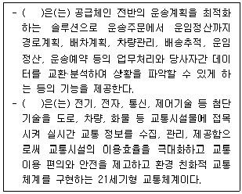
- 화물운송정보시스템(CVO: Commercial Vehicle Operation)
운송관리시스템(TMS: Transportation Management System) - 운송관리시스템(TMS: Transportation Management System)
지능형교통시스템(ITS: Intelligent Transport System) - 운송관리시스템(TMS: Transportation Management System)
주파수공용통신시스템(TRS: Trunked Radio System) - 지능형교통시스템(ITS: Intelligent Transport System)
위성위치확인시스템(GPS: Global Positioning System) - 화물운송정보시스템(CVO: Commercial Vehicle Operation)
지능형교통시스템(ITS: Intelligent Transport System)
(정답률: 52%)
14. 다음에서 제시하는 내용을 토대로 유통과정에서 발생하는 총 안전재고를 계산하면?
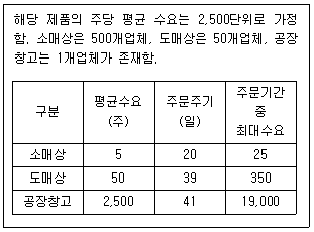
- 약 13,407 단위
- 약 16,820 단위
- 약 14,936 단위
- 약 23,555 단위
- 약 19,375 단위
(정답률: 16%)
15. 물류활동 중 운송, 보관, 하역, 포장, 정보에 관련된 내용으로 옳지 않은 것은?
- 운송은 운송수단인 트럭, 화차, 선박, 항공기 등을 이용하여 물품을 이동시키는 행위로서 일반적으로 전체 물류비 중 가장 큰 부분을 차지한다.
- 보관은 물품 저장기능을 말하는 것으로, 재고와 창고비를 줄이려고 하면 운송비가 증가하게 되는 상충관계로 인해 조직 내 갈등이 생길 수 있다.
- 하역은 보관, 운송의 양끝에서 물품을 처리하는 행위를 말하는 것으로 물류비 절감과 물류 합리화에 중요한 역할을 한다.
- 포장은 운송, 보관, 판매 등을 위해 상품 상태를 유지하기 위한 것으로 물류측면에서는 공업포장보다 상업포장이 더 우선적으로 고려된다.
- 정보활동은 상품 유통활동을 촉진시키기 위한 각종 정보를 뜻하는데 운송, 보관, 포장, 하역 등의 기능을 서로 연계시켜 물류 전반을 효율적으로 수 행하게 한다.
(정답률: 65%)
16. 아래 박스안의 설명은 어느 것에 관한 것인가?
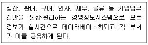
- MIS(management information system)
- SCM(supply chain management)
- ERP(enterprise resource planning)
- MRP(material resource planning)
- BPR(business process reengineering)
(정답률: 56%)
17. '전통시장 및 상점가 육성을 위한 특별법'에 의하면, 시장·군수·구청장은 상권활성화구역을 지정한 경우 상권활성화사업을 원활히 수행하기 위하여, 상권활성화를 위한 사업계획을 수립하여 시·도지사에게 승인을 받아야 한다. 이에 포함되는 내용으로 옳지 않은 것은?
- 상권활성화사업의 연차별 추진계획 및 사업시행기간
- 상권활성화구역의 명칭·위치 및 범위
- 상권활성화사업에 사용되는 재원의 조달 및 운용계획
- 상권활성화사업의 내용 및 추진방안
- 그 밖에 사업계획의 수립을 위하여 중소기업청장이 정하는 사항
(정답률: 74%)
18. 마이클 포터(Michael Porter)의 산업구조분석모형(5-forces model)에 대한 설명으로 옳지 않은 것은?
- 교섭력이 큰 구매자의 압력으로 자사의 수익성이 낮아질 수 있다.
- 대체재의 유용성은 기존 제품의 가치를 얼마나 상쇄할 수 있는지에 대한 변수이다.
- 공급자의 교섭력이 높아질수록 시장 매력도는 높아진다.
- 진입장벽의 높이는 신규 진입자 위협의 강도를 판단하는 기준이 된다.
- 경쟁기업간의 동질성이 높을수록 암묵적인 담합가능성이 높아진다.
(정답률: 45%)
19. JIT(just-in-time)생산 및 유통의 장점으로 옳지 않은 것은?
- 재고 보관공간을 줄일 수 있다.
- 일시적인 부품부족이 발생하여도 신속히 문제를 해결할 수 있다.
- 낮은 수준의 재고를 유지하면서도 생산 및 유통활동을 할 수 있다.
- 재고회전율이 높아지고 대기시간이 짧아진다.
- 재고관리에 자금이 많이 소요되지 않는다.
(정답률: 47%)
20. 도매상의 형태로 볼 수 있는 산업재 유통업자(industrial distributor)에 대한 설명으로 옳지 않은 것은?
- 산업재 제조업체들과의 긴밀한 관계가 형성되어 있다.
- 소매상보다는 제조업체나 기관을 상대로 주로 영업한다.
- 연구개발부문에도 자원을 할당한다.
- 기술지향적 성향보다는 마케팅지향적 성향이 강하다.
- 고객과의 관계마케팅을 중요시한다.
(정답률: 44%)
21. 재고자산을 차감한 총유동자산을 총유동부채로 나눈 비율로, 기업의 유동성을 측정할 수 있는 척도가 되는 것은?
- 유동비율
- 순운전자본
- 수익성비율
- 당좌비율
- 부채비율
(정답률: 24%)
22. 재고모형에 관한 다음 그림에서 A가 의미하는 것으로 옳은 것은?
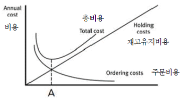
- EPQ, 경제적 주문량
- EPQ, 경제적 생산량
- ROP, 재주문점
- EOQ, 경제적 주문량
- EOQ, 경제적 생산량
(정답률: 68%)
23. 조직을 만들 때 고려해야 할 원칙들에 대한 설명으로 가장 옳지 않은 것은?
- 권한위임을 통해 상급자는 직무수행의 결과에 대해 책임을 면책 받을 수 있다.
- 한 사람의 상사가 감독할 수 있는 직원의 수에는 한계가 있다.
- 조직을 구축할 때 사람보다 일을 중심으로 설계하는 것이 기능화의 원칙이다.
- 직무와 관련된 권한과 책임이 분명하게 표시되어야 한다.
- 조직 각 부문의 목표는 조직 전체의 목표와 부합되어야 한다.
(정답률: 60%)
24. 물류표준화에 대한 설명으로 옳은 것은?
- 하드웨어 측면에서 수송장비, 보관시설, 포장용기 등을 규격화하여 일관물류시스템을 갖추어야 한다.
- 현재 우리나라의 표준파렛트 사용비율은 국제적으로 선도적인 수준에 있다.
- 각 수송수단별로 표준화되어야 하는데 이를 위해 포장의 모듈화는 중요하지 않다.
- 제품의 형상이나 크기가 다양하더라도 포장규격은 한가지로 표준화하여야 한다.
- 효율적인 물류표준화를 위해 우선 각 기업마다 화물특성에 맞는 표준화를 선도적으로 추구하여야 한다.
(정답률: 38%)
25. 유통업체에서 매입은 이익과 직접 관련이 있어 상당한 관리를 요한다. 다음 중 매입관리에서 말하는 매입에 대한 설명으로 가장 옳지 않은 것은?
- 매입은 필요로 하는 지정된 물자 또는 용역을 그에 상당하는 일정한 대가를 지불하고 다른 경제 주체로부터 획득하는 경제 행위를 말한다.
- 쌍방매입은 소매업체가 잘 팔리지 않는 다른 공급업체의 상품을 일시에 해결하기 위해 상호간 재고를 해결할 수 있는 다른 공급업체로부터 물건을 공급받는 방식을 말한다.
- 직매입은 일반적으로 점포가 상품을 매입하는 가장 근원적인 방법으로 상품의 독창성, 수익성을 확보하기 위한 최선의 방법을 말한다.
- 위탁매입은 소매업자가 일정 기간 동안 최종 소비자에게 제품을 판매한 후 사전에 결정된 일정비율의 커미션만 받고 남은 제품을 공급업자에게 반품하는 방법을 말한다.
- 약정구매는 소매업자가 납품받은 상품에 대한 소유권을 보유하되 일정 기간 동안에 팔리지 않은 상품은 다시 납품업자에게 반품하거나 혹은 다 팔린 후에 대금을 지급하는 권리를 보유하는 조건으로 구매하는 방식을 말한다.
(정답률: 58%)
2과목: 상권분석
26. 상권분석에 이용할 수 있는 회귀분석 모형에 관한 설명으로 가장 옳지 않은 것은?
- 소매점포의 성과에 영향을 미치는 요소들을 파악하는데 도움이 된다.
- 모형에 포함되는 독립변수들은 서로 관련성이 높아야 좋다.
- 성과에 영향을 미치는 영향변수에는 점포특성과 상권내 경쟁수준 등이 포함될 수 있다.
- 성과에 영향을 미치는 영향변수에는 상권내 소비자들의 특성이 포함될 수 있다.
- 회귀분석에서는 표본의 수가 충분하게 확보되어야 한다.
(정답률: 61%)
27. 확률적 상권분석 기법들에서 이론적 근거로 활용하고 있는 Luce의 선택공리와 관련이 없는 것은?
- Reilly의 소매중력모형
- Huff 모형
- 수정 Huff 모형
- MCI 모형
- MNL 모형
(정답률: 48%)
28. 아래의 (a)-(c)는 쇼핑센터의 테넌트 믹스와 관련된 내용들이다. 각각이 의미하는 바를 <예시>에서 찾아 순서대로 올바르게 나열한 것은?
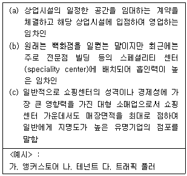
- 나 - 가 – 다
- 가 - 나 – 다
- 다 - 나 – 가
- 나 - 다 – 가
- 다 - 가 - 나
(정답률: 45%)
29. 점포의 입지조건 평가에 대한 내용으로 옳지 않은 것은?
- 부지가 접하는 도로의 특성과 구조 등 '도로조건' 을 검토해야 한다.
- 차량이 다니는 도로가 굽은 경우 커브 안쪽보다는 바깥쪽 입지가 유리하다.
- 점포의 면적이 같다면 일반적으로 도로의 접면이 넓은 경우가 유리하다.
- 경사진 도로에서는 일반적으로 하부보다는 상부쪽에 점포가 위치하는 것이 유리하다.
- 중앙분리대가 있는 경우 건너편 소비자의 접근성이 떨어지므로 불리하다.
(정답률: 51%)
30. 상권분석의 한 방법인 유추법(analog method)과 가장 관련이 없는 것은?
- 기존 점포에 대한 소비자의 쇼핑패턴
- 유사한 기존 점포
- CST(Customer Spotting Technique)
- 확률이론
- 애플바움(W. Applebaum)
(정답률: 50%)
31. 귀금속상점이 한 곳에 몰려있거나 떡볶이 가게들이 몰려 있어 엄청난 집객력을 갖는 경우는 다음 중 어느 입지원칙이 적용된 것이라 할 수 있는가?
- 접근가능성원칙
- 동반유인원칙
- 보충가능성의 원칙
- 점포밀집원칙
- 고객차단원칙
(정답률: 54%)
32. 배후지의 인구분석과 관련된 내용으로 옳지 않은 것은?
- 고객 수급권으로 인식되는 배후지는 고객이 존재하는 지역을 의미하며 지역범위가 유동적으로 변화할 수 있다.
- 공간적으로 면적이 같다면 배후지는 인구밀도가 높은 경우가 더 유리하다.
- 배후지는 소비자의 생활권역과 소매기업의 활동권이 직‧간접적으로 겹치는 공간이다.
- 행정구역과 배후지가 일치하지 않는 경우 행정단위의 인구자료를 가공하지 않고 활용해야 한다.
- 인구규모보다는 연령별‧성별 인구구조가 더 중요한 입지요인이 될 수 있다.
(정답률: 60%)
33. 아래와 같은 조건인 경우, 허프모델(Huff model)을 이용하여 어떤 소비자 K가 A점포에 쇼핑을 하러 갈 확률은?
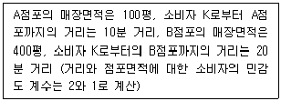
- 0.70
- 0.50
- 0.60
- 0.40
- 0.30
(정답률: 34%)
34. 상권분석을 위한 중심지이론과 관련이 없는 것은?
- 정육각형 모양의 상권
- 최소수요 충족거리(threshold)
- 최대도달거리(range)
- 개별 점포의 효용(utility)
- 크리스탈러(W. Christaller)
(정답률: 51%)
35. 고객 유도 시설은 고객을 모으는 자석과 같은 역할을 한다고 하여 소매 자석(customer genarator : CG)이라고도 한다. 도시형, 교외형, 인스토어형 등 입지유형에 따라 고객유도시설이 달라지는데, 다음 중 교외형 고객 유도시설이라고 볼 수 있는 것은?
- 식품 매장
- 계산대
- 대형 레저 시설
- 지하철 역
- 주차장 출입구
(정답률: 62%)
36. 점포의 매출예측을 위한 실사원칙(實査原則)에 속하지 않는 것은?
- 예측습관의 원칙
- 비교검토의 원칙
- 현장확인우선의 원칙
- 정성적 분석의 원칙
- 가설검증의 원칙
(정답률: 45%)
37. 상권구획모형의 일종인 티센 다각형(Thiessen polygon)에 대한 설명으로 옳지 않은 것은?
- 최근접상가 선택가설에 근거하여 상권을 설정한다.
- 상권에 대한 기술적이고 예측적인 도구로 사용될 수 있다.
- 시설간 경쟁정도를 쉽게 파악할 수 있다.
- 티센 다각형의 크기는 경쟁수준과 비례한다.
- 하나의 상권을 하나의 매장에만 독점적으로 할당하는 방법이다.
(정답률: 38%)
38. 점포입지를 분석할 때, 흔히 입지의존타입과 상권의존타입으로 분류한다. 다음의 여러 업종 중에서 상권의존타입에 가장 적합한 것은?
- 택배업
- 슈퍼마켓
- 식당
- 식품점
- 의류점
(정답률: 50%)
39. 아래 내용은 다음 중 어느 소매출점 유형의 특징인가?
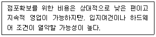
- 건물매입출점
- 건물임차
- 기존점포 인수
- 부지임차후 신축
- 부지매입후 신축
(정답률: 50%)
40. 도매상권을 구성하는 요소 중 상대적으로 중요성이 가장 떨어지는 것은?
- 소매상의 입지, 점포수 및 판매액
- 경쟁도매상의 입지, 분포 및 집적도
- 취급상품 및 상품군
- 도매상의 내부시설
- 로지스틱스(Logistics) 비용
(정답률: 48%)
41. 소매점이 집적하게 되면 경쟁 또는 양립의 상호작용이 발생할 수 있다. 따라서 가능하면 양립을 통해 상호이익을 추구하는 것이 좋다. 다음 중 양립성(兩立性)을 증대시키기 위한 접근순서가 올바르게 나열된 것은?
- 가격범위 - 취급품목 - 적정가격 - 적정가격 대비품질
- 취급품목 - 가격범위 - 적정가격 - 적정가격 대비품질
- 적정가격 - 가격범위 - 취급품목 - 적정가격 대비품질
- 취급품목 - 적정가격 - 적정가격 대비 품질 - 가격범위
- 가격범위 - 적정가격 - 적정가격 대비 품질 - 취급품목
(정답률: 64%)
42. 아래 내용은 어떤 입지유형에 대한 설명인가?
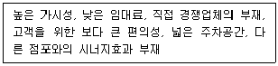
- 교외 주거도시의 단지내 상가지역
- 복합용도 개발지역
- 노면 독립입지
- 쇼핑센터
- 도심 입지
(정답률: 61%)
43. 다양한 상권유형과 특성을 연결한 내용으로 옳은 것은?
- 역세권상권은 지상과 지하의 입체적 상권으로 저밀도 개발이 이루어진다.
- 근린상권은 동네상권이라고도 하며 도로에 인접한 경우가 많다.
- 도심상권은 대중교통의 중심지로 접근성이 좋지 않다.
- 아파트상권은 단지가 대형평형일수록 구매력이 크고 매출에 더 유리하다.
- 아파트상권은 해당 단지를 넘어서는 상권범위 확대 가능성이 높다.
(정답률: 47%)
44. 상권과 입지의 개념을 비교 ㆍ 설명한 것으로 옳지 않은 것은?
- 상권 - 점포를 이용하는 소비자들이 분포하는 공간적 범위를 나타냄
- 입지 - 점포를 경영하기 위해 선택한 장소(부지, 위치)를 말함
- 상권 - 특정 지점(point)으로 표현되는 특성이 있음
- 입지 - 접근성, 가시성, 매장면적, 주차장 등을 평가함
- 상권 - 다수 점포가 집단으로 존재하는 지역을 지칭하기도 함
(정답률: 68%)
45. 상권과 혼용되는 다양한 유사개념 중 하나로 상가나 시장과 같은 복수의 점포로 구성되는 상업집단이 영향을 미치는 지리적 범위를 뜻하는 것은?
- 판매권
- 상세권
- 생활권
- 거래권
- 지지권
(정답률: 60%)
3과목: 유통마케팅
46. 지속성 상품의 매입에 있어 주문점을 파악할 필요가 있다. 주문점(order point)이란 다음 주문수량이 도달하기 이전에 재고량이 가용수준을 유지하지 못하면 품절이 발생하는 수준에 도달한 때를 말한다. 주기적 주문시스템에서 아래와 같은 경우 주문점은 몇 단위인가?
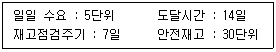
- 165단위
- 127단위
- 135단위
- 140단위
- 177단위
(정답률: 36%)
47. 일반적으로 상품의 포장은 그 자체로서 상품기능, 의사전달기능, 가격기능을 갖는다. 다음 중에서 포장의 상품기능으로 옳지 않은 것은?
- 상품의 사용을 편리하게 하는 기능
- 상품을 보호하는 기능
- 상품의 기능을 향상시키는 기능
- 상품을 식별하고 구분하는 기능
- 상품을 담는 기능
(정답률: 28%)
48. 다음에서 서술하는 가격결정방법은 무엇인가?
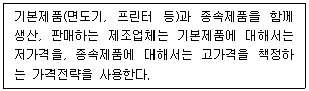
- 노획가격결정(captive pricing)
- 묶음가격(price bundling)
- 이미지 가격결정(image pricing)
- 유인가격결정(loss-leader pricing)
- 이분가격결정(two-part pricing)
(정답률: 40%)
49. 공중관계(PR, Public Relations)에 해당하지 않는 것은?
- 언론관계
- 제품 퍼블리시티(Publicity)
- 커뮤니티 관계
- 투자자관계
- UCC(User Created Contents)광고
(정답률: 43%)
50. 상품의 구색을 회전율 위주로 구성하였을 때, 높은 회전율의 장점으로 옳지 않은 것은?
- 재고가 빨리 회전되면 진부화되기 전에 판매되므로 진부화의 위험에서 벗어날 수 있다.
- 빠른 회전율은 판매원의 사기증진에도 도움이 된다.
- 빠른 회전율은 다양한 상품을 대량으로 일시에 구매할 수 있게 하여 운영비를 줄일 수 있게 한다.
- 빠른 회전율은 낮은 재고수준을 의미하므로 재고유지비를 줄임으로써 운영비용도 감소시킬 수 있다.
- 신선한 상품은 오래되고 낡은 상품에 비해 잘 팔리기 때문에 빠른 재고회전율은 매출량을 증대시킨다.
(정답률: 44%)
51. 인터넷마케팅이 활성화됨에 따라 점포소매상들이 보이고 있는 변화 양상으로 가장 옳지 않은 것은?
- 오프라인채널과 함께 온라인채널도 병행하는 하이브리드 채널을 활용한다.
- 실제 점포에서의 쇼핑을 통해서만 느낄 수 있는 즐거움을 강화하고 있다.
- 온라인채널과의 치열한 가격경쟁을 통해 진입장벽을 형성하고, 기존 시장을 방어하려고 한다.
- 점포내에서의 편안한 분위기, 고객과의 인간적 유대강화 등 쇼핑의 즐거움과 인적 관계를 중시한다.
- 보다 훈련된 인적판매를 통해 고객서비스를 더욱 강화한다.
(정답률: 53%)
52. 소비자의 구매행동에 대한 설명으로 가장 옳지 않은 것은?
- 관여도가 높고 브랜드 간의 차별화가 클수록 복잡한 구매행동을 보인다.
- 간헐적 구매가 이루어지며 브랜드 간 차이가 없는 경우에는 인지부조화 감소행동을 보인다.
- 제품에 자기표현적 측면이 강하고 제품의 가격이 높은 경우 인지부조화 감소행동을 보인다.
- 제품에 대한 소비자 관여도가 낮지만 브랜드 간에 차이가 있는 구매상황에서는 다양성 추구 구매행동을 보인다.
- 소비자의 관여도가 낮고 브랜드 간 차이가 없는 경우에는 습관적 구매행동을 보인다.
(정답률: 39%)
53. 수직적 경로구조에 대한 설명으로 가장 옳지 않은 것은?
- 전통적 경로구조에서 수행되는 기능상의 일부 또는 전부를 통합하여 수행하는 방식이다.
- 유통경로 각 단계별로 독립적으로 소유 및 관리되고 있는 기관들이 연합하는 것을 수직적 경로구조라고 한다.
- 전통적 경로구조에 비해 갈등해소 및 의사소통 증진으로 거래비용이 감소하게 된다.
- 유통경로상에서의 통제 수준은 강화되나 경로조직에 대한 투자와 관리의 비용 또한 증가한다.
- 수직적 경로구조의 유형에는 기업형, 계약형, 관리형 등이 있다.
(정답률: 24%)
54. 고객의 서비스 품질 지각에 영향을 미치는 요인들 중 응답성에 해당하는 것은?(문제 오류로 가답안 발표시 5번으로 발표되었지만 확정답안 발표시 1, 5번이 정답처리 되었습니다. 여기서는 가답안인 5번을 누르시면 정답 처리 됩니다.)
- 고객에게 문제가 생겼을 때 관심을 보이고 해결해 줄 것이다.
- 기업은 약속한 시간에 서비스를 제공할 것이다.
- 직원들은 고객의 질문에 답변할 충분한 지식을 갖고 있을 것이다.
- 직원은 고객의 필요와 욕구를 이해할 것이다.
- 직원은 항상 자발적으로 고객을 도울 것이다.
(정답률: 68%)
55. 모집단에서 표본을 추출할 때 사용하는 표본추출 방식에 관해 설명한 것이다. 아래 설명에 가장 적합한 방식은 무엇인가?
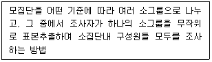
- 층화무작위 표본 추출법
- 군집표본 추출법
- 편의표본 추출법
- 판단표본 추출법
- 할당표본 추출법
(정답률: 39%)
56. 상품구성 방법 중 전문점 지향의 상품구성으로 옳은 것은?
- 좁고 깊은 상품구성
- 좁고 얕은 상품구성
- 넓고 깊은 상품구성
- 넓고 얕은 상품구성
- 참신성 위주 상품구성
(정답률: 70%)
57. 소비자는 각자 독특한 욕구와 필요가 있기 때문에 판매자는 잠재적으로 각 소비자를 서로 다른 표적시장으로 보고 세분화를 하되, 회사 특성을 고려하여 넓게, 좁게 또는 이들의 중간 정도 등 적절한 수준의 세분시장을 선정하게 된다. 다음 중 표적시장의 수준이 가장 넓은 시장은 무엇인가?
- 비차별적 시장
- 틈새 시장
- 차별적 시장
- 미시 시장
- 지역 시장
(정답률: 45%)
58. 기업이 포지셔닝 전략을 수행하기 위해서는 자사의 경쟁사 대비 차별적 경쟁우위를 파악하여 적절한 경쟁우위를 선택한 후, 소비자에게 선택한 포지션을 전달하게 된다. 다음의 차별화 전략 중 성능, 디자인 등과 같이 제품의 물리적 특성을 가지고 차별화하는 전략은 무엇인가?
- 서비스 차별화
- 인적 차별화
- 제품 차별화
- 이미지 차별화
- 심리적 차별화
(정답률: 73%)
59. 유통경로에서 구매자와 판매자의 관계발전모형에 기초한 5단계로 옳은 것은?
- 인지→탐색→확장→몰입→종식
- 인지→탐색→몰입→확장→종식
- 탐색→인지→몰입→확장→종식
- 탐색→확장→인지→몰입→종식
- 탐색→몰입→확장→인지→종식
(정답률: 31%)
60. 상품을 디스플레이할 때 고려하는 사항으로 가장 옳지 않은 것은?
- 상품은 점포의 이미지와 일관되게 진열되어야 한다.
- 상품의 특성을 고려하여 가치를 높일 수 있게 진열한다.
- 종종 포장이 상품의 진열방법을 결정하기도 한다.
- 상품의 잠재적 이윤이 진열방법을 결정하는데 영향을 미친다.
- 도난을 방지하기 위해 품목별 진열을 활용하는 것이 가장 좋다.
(정답률: 57%)
61. 오프라인 조사 대비 인터넷 설문조사의 장점으로 옳지 않은 것은?
- 글로벌 리서치 용이성
- 설문 설계의 유연성
- 데이터 분석의 용이성
- 상대적 저비용
- 매우 작은 무응답오차(Non response error)
(정답률: 65%)
62. 경로 파워에 대한 설명으로 옳지 않은 것은?
- 경로파워는 한 경로구성원이 유통경로 내의 다른 경로구성원의 마케팅 의사결정에 영향력을 행사할 수 있는 능력으로 정의된다.
- 경로파워는 한 경로구성원이 가지고 있는 힘의 원천과 다른 경로구성원이 특정 경로구성원에 대해 갖는 의존성의 정도에 따라 결정된다.
- 경로파워가 커지게 되면 다른 경로구성원의 의사결정 변수를 통제할 수 있게 된다.
- 경로파워가 커지게 되면 다른 경로구성원들을 중재하여 그들 간의 경로갈등을 줄여줄 수 있다.
- 특정 경로구성원이 다른 경로구성원에 기여한 매출액과 이익이 크면 클수록 경로파워가 증가하게 된다.
(정답률: 44%)
63. 제품의 수요예측을 위한 방법으로 가장 옳지 않은 것은?
- 델파이조사법
- 사례유추법
- 시계열분석방법
- 확산모형방법
- 레일리(Reilly) 법칙분석
(정답률: 51%)
64. 소매업체가 전형적으로 사용하는 종업원에 대한 보상 계획에는 5가지가 있다. 아래 박스 내용은 이 5가지 보상계획 중 하나에 대한 약점을 서술한 것이다. 어떤 보상계획에 관한 것인가?
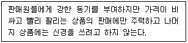
- 할당량 보너스(quota-bonus)
- 수수료(commission)
- 단체 인센티브(group incentives)
- 봉급(straight salary)
- 봉급과 수수료(salary plus commission)
(정답률: 40%)
65. CRM(customer relationship management)을 통하여 얻을 수 있는 효과로 옳지 않은 것은?
- 상승판매(up-selling) 증가
- 교차판매(cross-selling) 강화
- 고객 유지율(customer retention) 증가
- 판매사이클(selling cycle) 증가
- 소비 지출 점유율(share of wallet) 증가
(정답률: 54%)
66. 본래 계획한 판매가격과 실제 판매가격의 차이를 의미하며 할인, 특별 할인, 결손의 형태로 나타나는 것을 의미하는 용어로 옳은 것은?
- 마크다운(Markdown)
- 할인(Discounts)
- 감모(Reductions)
- 마크업(Markup)
- 손실(Loss)
(정답률: 45%)
67. 소매상이 표적시장을 선정하기 위해 고려해야 하는 요소로 가장 옳지 않은 것은?
- 미래의 성장잠재력
- 표적시장의 크기
- 소매상의 자원과 기술
- 소요되는 투자액
- 소매업의 법적 환경
(정답률: 57%)
68. 가전제품전문점과 할인점의 가전코너와의 경쟁을 의미하는 것은?
- 업태 내 경쟁(intratype competition)
- 업태 간 경쟁(intertype competition)
- 수직적 경쟁(vertical competition)
- 시스템 경쟁(system competition)
- 가치사슬 경쟁(value chain competition)
(정답률: 51%)
69. 슈퍼마켓, 할인점 등의 경영원리를 결합한 대규모 소매점으로 식품, 의류, 가전제품, 가구 등을 망라하여 취급한다. 대표적으로 프랑스의 까르푸가 있다. 이에 해당하는 소매상은 무엇인가?
- 회원제 창고형 도소매점(MWC)
- 슈퍼슈퍼마켓(SSM)
- 파워센터(power center)
- 하이퍼마켓(hypermarket)
- 쇼핑센터(shopping center)
(정답률: 52%)
70. 소매수명주기 중 판매증가율과 이익수준이 모두 높은 단계에서 수행해야 하는 소매업자의 전략 중 가장 옳은 것은?
- 성장유지를 위한 높은 투자가 필요하다.
- 특정 세분시장에 대한 선별적 투자가 필요하다.
- 소매개념을 정립 및 정착시키는 전략이 필요하다.
- 소매개념을 수정하여 새로운 시장에 진출하는 전략이 필요하다.
- 자본지출을 최소화하는 탈출전략이 필요하다.
(정답률: 50%)
4과목: 유통정보
71. 기업의 구조는 운영, 관리, 전략의 3계층의 피라미드 구조로 보는 것이 일반적이라 할 때, 조직이 수행하는 비즈니스 의사결정 특성에 대한 설명으로 가장 옳지 않은 것은?
- 운영계층의 의사결정은 대부분 단기적이고, 그날 그날의 운영정보를 주로 다룬다.
- 운영계층의 핵심성과지표는 대부분 효과에 중점을 둔다.
- 관리계층은 중간관리자, 임원 등이 속하며, 의사결정유형은 준구조적인 형태로 간헐적으로 우발적인 형태의 의사결정을 수행해야 할 때가 있다.
- 고위경영자, 사장, 및 리더들을 포함한 전략계층의 의사결정은 비구조적이거나 일회적인 경우가 많다.
- 전략계층은 조직 외부 및 범산업적 영역에서 발생하는 정보를 수집하고 분석하여 의사결정을 내려야 하는 경우가 많다.
(정답률: 24%)
72. 다음이 설명하는 재고관리 기법으로 가장 옳은 것은?
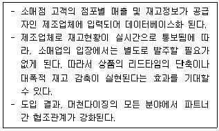
- DBR
- MRP
- DRP
- VMI
- JIT
(정답률: 36%)
73. 인터넷비즈니스와 관련된 네트워크기술의 하나로 월드와이드웹(world wide web)을 창시한 팀 버너스 리(Lee)가 창안한 현재의 웹이 의미의 웹으로 진화한 개념으로 컴퓨터가 스스로 문장이나 문맥 속의 단어의 미묘한 의미를 구분하여 사용자가 원하는 정보를 제공할 수 있는 웹을 뜻하는 것은?
- RSS(Rich Site Summary)
- Bluetooth
- Semantic web
- WiBro
- Wi-Fi
(정답률: 64%)
74. 의사결정에 사용되는 경영과학기법들이다. 다음 중 기술적(descriptive) 의사결정에 사용되는 기법으로 가장 적절한 것은?
- 정수계획모형
- 비선형계획모형
- 선형계획모형
- 목표계획모형
- 시뮬레이션모형
(정답률: 61%)
75. 아래 박스의 ( 1 )과 ( 2 )에 들어갈 가장 옳은 용어는?
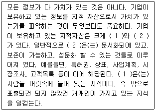
- (1) 경험지, (2) 학습지
- (1) 학습지, (2) 경험지
- (1) 암묵지, (2) 형식지
- (1) 형식지, (2) 암묵지
- (1) 개인지, (2) 조직지
(정답률: 50%)
76. 아래 박스의 ( )에 들어갈 가장 옳은 용어는?
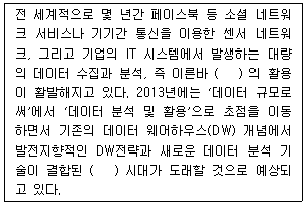
- IOE
- 클라우드컴퓨팅
- 빅데이터
- 데이터마이닝
- OLAP
(정답률: 58%)
77. 아래 박스의 ( )에 들어갈 가장 옳은 용어는?
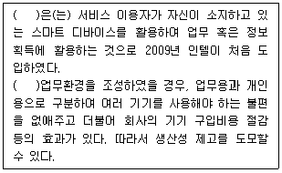
- O2O
- BYOD
- BYOB
- AR
- Indoor OD
(정답률: 36%)
78. 공급-유통 채널상 주요 가치창출과정을 반영하는 ECR(Efficient Consumer Response)의 구현전략으로 가장 적절하지 않은 것은?
- 효율적인 재고 보충(efficient replenishment)
- 효율적인 매장 구색(efficient assortment)
- 효율적인 프로젝트 관리(efficient project management)
- 효율적인 판매 촉진(efficient promotions)
- 효율적인 신제품 도입(efficient product introductions)
(정답률: 25%)
79. 캐플란과 노튼의 BSC는 재무적 지표 뿐만 아니라 성과측정에 다양한 비재무적 지표를 활용하여 과거, 현재, 미래의 성과 및 가치를 평가한다. 각 관점에 해당하는 측정지표의 예로 가장 옳지 않은 것은?
- 학습과 성장 관점 – 정보시스템 역량, 조직 역량
- 고객 관점 – 고객수익성, 재구매 비율
- 내부 프로세스 관점 – 고객응대시간, 평균 리드타임, 총제품 대비 신제품 비율
- 학습과 성장 관점 – 직원 생산성, 노하우, 저작권
- 내부 프로세스 관점 – 경제적 부가가치, 내부관리능력
(정답률: 24%)
80. 전자상거래를 통해 경쟁력을 갖추기 위한 경영 전략으로 가장 옳지 않은 것은?
- 다양한 제품과 서비스를 공급해야 한다.
- 제품과 서비스에 대한 가격의 차별화를 추구해야 한다.
- 끊임없이 생각하고 혁신하는 새로운 경영 전략이 필요하다.
- 사용자가 원하는 보다 가치 있는 정보를 제공하여야 한다.
- 전통적인 상거래의 모든 관행을 따라가야 한다.
(정답률: 78%)
81. 인터넷쇼핑몰이 지니고 있는 특징으로 가장 옳지 않은 것은?
- 구매자가 원하는 정보에 자유로이 접속할 수 있도록 지원한다.
- 기업이 고객행동에 동태적으로 반응하고 사용하기 편리한 인터페이스를 제공함으로써 구매자가 시장에 쉽게 접근할 수 있도록 한다.
- 구매자와 판매자간의 거래비용이 증가한다.
- 대화형 멀티미디어 거래가 가능하다.
- 지리적 제약 없이 판매자와 소비자를 직접적으로 연결할 수 있다.
(정답률: 75%)
82. 제조업체는 e-마켓플레이스(e-Marketplace)모델을 구축할 경우 제품의 표준화와 기업간의 협력관계를 고려해야 한다. 다음 중 제품 표준화 정도는 높지만, 기업간 협력수준을 요구하는 정도가 낮은 제품을 대상으로 대량생산과 판매가 가능한 특징을 갖는 e-마켓플레이스모델은 무엇인가?
- 연합 거래형 e-Marketplace
- 직접 거래형 e-Marketplace
- 중개 거래형 e-Marketplace
- 공동 구매형 e-Marketplace
- 커뮤니티형 e-Marketplace
(정답률: 19%)
83. POS시스템의 도입 시 기대할 수 있는 효과로 가장 옳지 않은 것은?
- 매출등록시간 단축 및 등록오류 감소
- 계산대의 작업능률 향상 및 인건비 절감
- 상품별 판매추이에 따른 신속한 대응 가능
- 재고파악 용이 및 품절방지
- 신상품 개발 및 소개 활동을 통한 판매 촉진
(정답률: 70%)
84. 유통경로관리에서 바람직한 유통정보가 갖추어야 할 특성으로 가장 옳지 않은 것은?
- 정보의 정확성
- 정보의 적절성
- 정보의 직시성
- 정보의 복잡성
- 정보의 통합성
(정답률: 72%)
85. EPC(Electronic Product Code)의 정의와 구성요소에 대한 설명으로 가장 옳지 않은 것은?
- EPC는 전자제품코드를 뜻하며, 차세대 바코드라고도 불린다.
- EPC헤더는 번호, 형식, 버전 등을 포함한 EPC의 전체 길이를 나타낸다.
- EPC매니저는 상품코드와 일련번호의 관리 책임을 맡고 있는 기업을 표시한다.
- 일련번호는 품목 내에서의 개별 제품의 고유 번호를 표시한다.
- EPC는 대한상공회의소 유통물류진흥원에서 개발한 코딩 방식으로 개별 상품을 식별할 수 있다.
(정답률: 44%)
86. 공급체인전략(Supply Chain Strategy)을 구성하는 전략은?
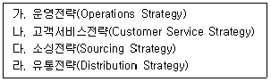
- 가, 나, 라
- 나, 라
- 가, 나, 다
- 가, 다, 라
- 가, 나, 다, 라
(정답률: 67%)
87. 일대일 마케팅을 중심으로 하는 인터넷 마케팅의 특징으로 가장 옳지 않은 것은?
- 정보기반의 마케팅
- 개인화된 서비스 제공
- 고비용 마케팅 수단
- 성과측정의 용이성
- 가격 비교의 용이성
(정답률: 55%)
88. GS1식별코드 중에서 상품식별코드는?
- GLN
- GRAI
- GSIN
- GINC
- GTIN
(정답률: 68%)
89. 점포에 그대로 진열할 수 있도록 가격 태그(tag)가 부착된 상품이 행거(hanger)와 함께 물류센터를 경유하지 않고 공장으로부터 소매점포로 직접 보내는 것은?
- FRM(Floor Ready Merchandise)
- SCM(Shipping Carton Marketing)
- ASN(Advanced Shipping Notice)
- 크로스도킹(cross docking)
- TA 링크(Textile Apparel Linkage)
(정답률: 47%)
90. 유통물류 영역에 접목할 최신기술 중 다음 세대의 무선네트워크 설명으로 가장 옳지 않은 것은?
- 블루투스는 상대적으로 유효거리가 짧은 네트워크기술로, 낮은 전력 소비와 전송하는 사람으로부터 전 방향으로 파장을 방출한다는 특징이 있다.
- 셀룰러무선서비스는 1G, 2G, 2.5G, 3G, 4G, 5G 등 세대로 구분되어 기술이 발전되어 왔으며, 4G부터 비디오와 웹브라우징 및 인스턴트메시징을 지원한다.
- UWB는 100mbps가 넘는 전송속도의 높은 대역 무선기술이다.
- NFC는 근거리 네트워크 중 그 유효거리가 작은 범주를 가지고 있다. 휴대전화나 신용카드 등과 같은 모바일 기기에 내장되도록 설계되어 이용되기도 한다.
- WiFi의 IEEE표준은 802.11군이다.
(정답률: 34%)